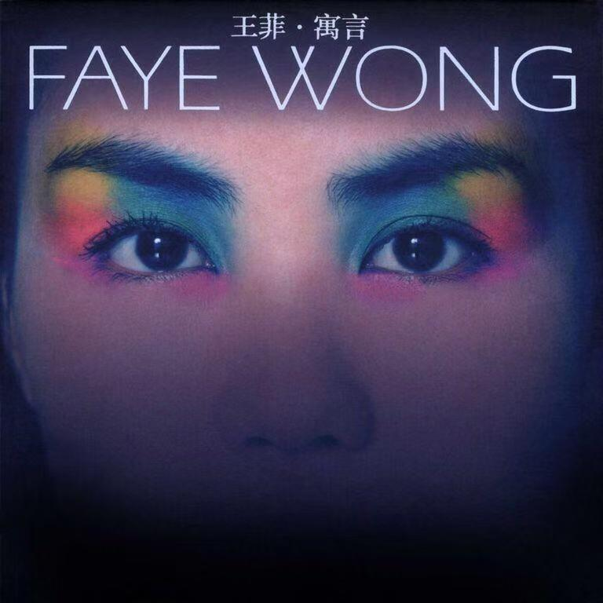
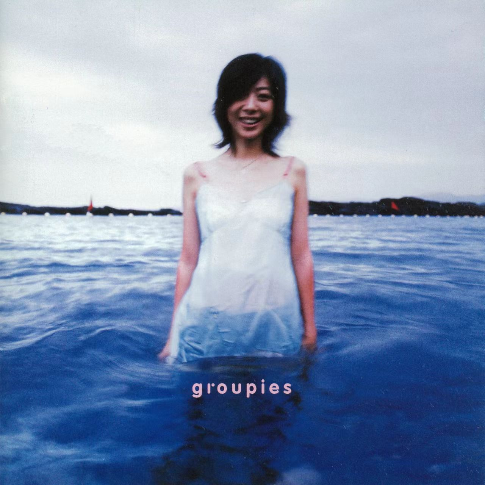

寓言
浓烈撞色眼妆衬着朦胧沉静的眼眸，王菲 2000 年发行的《寓言》专辑，刚看见封面就自带迷离、诡谲又浪漫的神秘氛围感，音乐人王菲，曲风融合另类流行、梦幻电子与复古迷幻。这张专辑分为五首寓言叙事曲与五首通俗流行曲目两部分，是王菲音乐创作与自我表达走向成熟的里程碑，她主动跳出华语情歌的固化框架，联手林夕、张亚东打造兼具文学性与先锋质感的完整音乐篇章。专辑旋律层次差异鲜明，前五首叙事曲迂回诡谲，后段曲目婉转轻盈；编曲大量运用迷幻合成器、弦乐与细碎电子音效，虚实交织，氛围感饱满；王菲的声线可塑性拉满，时而空灵缥缈，时而冷冽低沉，唱腔松弛又充满叙事感；歌词满是寓言隐喻、情爱执念与人性思索，意象晦涩又极具美感。它没有拘泥于华语乐坛传统情歌模板，用先锋编曲搭配充满文学深度的词作，勾勒出独属于王菲的精神世界，时至今日依旧是华语另类流行难以复刻的标杆。适合独自在傍晚或是深夜戴上耳机完整顺听，如果你厌倦千篇一律的口水情歌，想要一张兼具先锋实验质感与细腻情绪内核的华语专辑，《寓言》永远是值得反复深挖的宝藏之作。

Groupies 吉他手
浸在澄澈蓝海之中的人像带着松弛柔软的笑意，朦胧胶片质感裹满清淡治愈的夏日氛围，这是陈绮贞的《Groupies 吉他手》，曲风融合城市民谣、轻摇滚与清新流行。这张 2002 年发行的专辑是陈绮贞独立创作路上极具代表性的作品，全程保留生活化、质朴的录制质感，跳出华语情歌浓烈煽情的套路，以少女视角记录暗恋、独处、奔赴热爱等细碎日常，奠定了她独有的城市文艺女声标签。专辑旋律轻盈流畅，线条柔和舒缓，带着恰到好处的清甜氛围感，记忆点细碎温柔；编曲以干净木吉他、轻脆鼓点、简约贝斯为主，配器克制清淡，没有厚重华丽的堆砌；陈绮贞的声线纤细干净，唱腔松弛自然，像在耳边轻声诉说心事，细腻又灵动；歌词聚焦暗恋心事、乐队追梦、城市独处等生活化意象，文笔细腻温柔，藏着少女独有的敏感与浪漫。它剥离情歌刻意的悲喜戏剧感，用清淡干净的轻摇滚声响捕捉平凡日常里细碎柔软的心动，在华语流行乐坛走出独一份的文艺清新路线。适合夏日傍晚散步、居家整理琐事时循环聆听，如果你听腻了大开大合的伤感情歌，偏爱细腻温柔、满是生活细碎浪漫的城市轻民谣，这张专辑会带来一整份清爽松弛的治愈感。